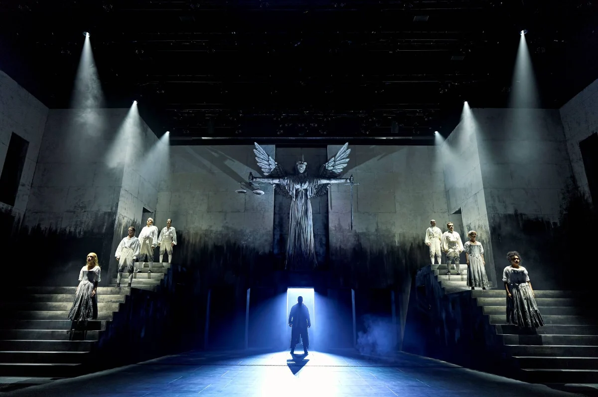

Our Family Verdict
The Birmingham Rep has delivered an unforgettable theatrical triumph with Stephen Sondheim and Hugh Wheeler’s legendary musical masterpiece, Sweeney Todd: The Demon Barber of Fleet Street. Directed with precision by The Rep’s Artistic Director Joe Murphy, this brand-new production is dark, haunting, and razor-sharp from start to finish.
Internationally acclaimed musical theatre star Ramin Karimloo commands the stage in the title role, capturing Todd’s tortured vengeance with intense vocal power. Opposite him, singing sensation Meow Meow is a revelation as the delightfully eccentric Mrs Lovett. Together, the pair share an electric chemistry, injecting sharp, laugh-out-loud comedy into even the darkest corners of Fleet Street.
MATURE THEMES
The production pulls no punches with its darker themes. Three-time Olivier Award winner David Bedella delivers a chilling performance as the sinister Judge Turpin—capturing the disturbing nature of his character with intense gravity and delivering scenes that are intentionally and brilliantly uncomfortable to watch.
Visually, the production is a masterclass in atmospheric design. Dominated by a looming Statue of Justice, the set casts an ominous shadow across the stage—a constant reminder of the injustice driving Sweeney’s descent. The chilling monochrome staging makes the selective splashes of colour, subtle stage lighting, and Mr Todd’s lethal red chair stand out with striking theatrical impact.
MUSIC SENSORY STRATEGY
Sondheim’s score blends menacing, operatic melodies with rich instrumentation that steadily mounts tension. During the chilling chorus numbers, ghostly figures glide across a mist-filled stage, sending genuine goosebumps through the auditorium.
Delivered by a powerhouse cast of just 11 exceptional performers, every single actor on stage fully earns their immediate standing ovation.
Production Gallery
Sensory Strategies & Parent Insights
- Running Time & Interval: Approximately 2 hours 45 minutes, including a 20-minute interval.
- Age Suitability & Mature Themes: Strongly recommended for ages 14+ due to intense psychological horror, dark themes, and stage violence.
- Visuals & Staging: Heavy atmospheric mist/haze effects and dramatic high-contrast lighting; sudden sharp lighting cues accompany moments in the barber's chair.
- Audio Profile: Menacing choral peaks and loud orchestral crescendos; ear defenders recommended for sound-sensitive theatregoers.
- Sensory Preparation: The monochrome staging and mist create high visual immersion—familiarisation with Sondheim's score beforehand helps prepare for intense dramatic sequences.